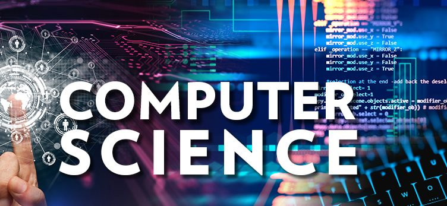

Technical Interview Questions & Answers For CSE

What is a file?
A file is a basic component of computer science and a concept every computer science professional should be familiar with. An employer may ask this question to ensure you know the basics of the field.
What is a class? What is a superclass?
Class and superclass are two commonly used terms that refer to an important component of computer programming.
What is inheritance?
Inheritance is another important component in computer programming and may be used regularly in many computer science careers. An employer may ask you this question to ensure you understand and know how to properly use inheritance in computer programming.
What are the primary components of a computer system?
As a computer science professional, being able to accurately answer this question is important to ensure you convey a basic understanding of computers.
What is a chipset?
Chipsets help control communications between devices and play a key role in helping a computer professional determine if a computer system is performing properly.
What is an operating system? What are the popular operating systems used today?
Having an in-depth understanding of what an operating system is and the various operating systems most commonly used in a business setting is a fundamental part of being a computer science professional. Employers will typically ask this question to ensure you have knowledge of all operating systems and especially the operating system that the employer's company relies on.
What is primary and secondary memory?
Understanding the different types of memory that can be utilized in computer systems is a major function of computer science positions. Knowing how they work and the difference between these two types of memory is often mandatory for computer science jobs.
What are the commonly used computer processors?
An employer may ask you about the most commonly used computer processors, or they may ask you about the specific computer processor they use at the business you are applying to work for. You should be very familiar with all common computer processors and know how to answer questions regarding each.
What is a constructor?
Understanding what a constructor is and how it works is a more advanced topic, but one that you must be familiar with as a computer science professional. Depending on the type of company you are applying to work at, the interviewer will likely ask you about constructors and why they are important in computer science.
What is an interface?
Understanding interface and how to implement it in a user-friendly way is incredibly important to a computer science professional's job. Asking about if you know what an interface is and if you are familiar with how it is used may be one of the questions you face during a computer science interview.